Tài liệu này gồm 3 phần: (1) Đánh giá tổng quát phần mềm, (2) Đánh giá chi tiết khi sử dụng, và (3) Hướng dẫn kế toán thao tác từng bước có ảnh chụp màn hình thật. Phần (3) dùng ngôn ngữ bình thường, không thuật ngữ kỹ thuật, để bạn chỉ cần làm theo từng bước.
cencomOS gara 4.0 là phần mềm quản lý gara xe đầu kéo chạy trên trình duyệt web (máy tính, máy tính bảng, điện thoại), dùng để theo dõi toàn bộ quá trình từ lúc xe vào sửa, nhập vật tư, xuất kho, nghiệm thu, quyết toán, đến khi giao xe. Đây là bản nâng cấp từ hệ thống cũ, viết lại hoàn toàn cho nhẹ, nhanh và cập nhật theo thời gian thực.
Đối tượng dùng chung một phần mềm: Lái xe, Thợ, Thủ kho, Kế toán, Quản lý, Giám đốc, Xưởng, Quản trị viên. Mỗi người chỉ thấy và làm được那些 việc thuộc quyền của mình.
| Nhóm chức năng | Mục đích chính | Kế toán có dùng? |
|---|---|---|
| Tiếp nhận & Phiếu sửa chữa (SC) | Lập phiếu tiếp nhận xe, thêm công việc & vật tư, theo dõi tiến độ | Xem |
| Đề xuất / Đề nghị mua | Yêu cầu mua vật tư, duyệt mua, làm căn cứ nhập kho | Xem / Tạo / Duyệt |
| Kho vật tư | Quản lý tồn kho, phiếu nhập, phiếu xuất, đề nghị mua | Xem |
| Tài sản & Khấu hao | Xem báo cáo xe, lịch sử sửa chữa, quyết toán, tính khấu hao | Xem / Quyết toán |
| Mua & Công nợ NCC | Theo dõi nhà cung cấp, hóa đơn đầu vào, thanh toán, công nợ phải trả | Xem / Tạo / Duyệt |
| Báo giá NCC | Lưu báo giá của nhà cung cấp (nhập tay) | Xem / Tạo |
| Chat nội bộ | Nhắn tin, giao việc giữa các bộ phận | Xem / Tạo |
| Bảng điều khiển xưởng | Kanban theo dõi xe theo trạng thái (dành xưởng/giám đốc) | Không (bị khoá với kế toán) |
| Phân quyền | Quản trị viên cài đặt ai được làm gì | Không (chỉ quản trị viên) |
Khi có xe vào sửa, người tiếp nhận tạo phiếu sửa chữa (gọi tắt là phiếu SC): chọn xe, ghi các công việc cần làm và vật tư cần dùng. Kế toán không tạo phiếu SC (việc này do bộ phận tiếp nhận/thợ), nhưng có thể tạo và duyệt đề nghị mua vật tư khi cần mua hàng.
Sau khi tiếp nhận, xe được kiểm tra để biết hư hỏng gì (bước "chẩn đoán"). Kết quả kiểm tra là căn cứ để báo giá và lập lệnh sửa. Ở góc độ kế toán, kiểm tu giúp xác định chi phí dự kiến, nhưng chưa sinh số tiền cho đến khi có nhập/xuất vật tư và nhân công.
Khi sửa chữa, vật tư được lấy từ kho đưa vào xe → gọi là xuất kho. Mỗi lần xuất làm giảm số lượng tồn và ghi nhận giá trị giá vốn. Kế toán chỉ được xem các phiếu xuất (không tự xuất), và dùng để đối soát với chi phí sửa chữa.
Mỗi phiếu sửa chữa đi qua 8 bước từ lúc vào đến lúc giao xe. Mỗi bước (nếu có phát sinh tiền) sẽ được ghi thành một "bút toán kế toán" tương ứng:
| Bước | Tên bước | Sự kiện tài chính | Kế toán ghi nhận |
|---|---|---|---|
| 1 | Tiếp nhận xe | Mở hồ sơ (chưa có tiền) | — |
| 2 | Kiểm tra & chẩn đoán | Ước tính chi phí | — |
| 3 | Báo giá nội bộ | Chưa có khách → không ghi | — |
| 4 | Lập lệnh sửa chữa | Chốt kế hoạch | — |
| 5a | Nhập vật tư (NCC + hóa đơn) | Mua vật tư | Nợ 152, 133 / Có 331 (hoặc 112) |
| 5b | Xuất vật tư cho sửa chữa | Chi phí sửa chữa | Nợ 154 / Có 152 |
| 5c | Nhân công (trong/ngoài) | Chi phí nhân công | Nợ 622 / Có 334 (trong) hoặc 331 (ngoài) |
| 6 | Nghiệm thu (QC) | Biên bản nghiệm thu | — (không ghi tiền) |
| 7 | Quyết toán phiếu | Chốt chi phí | Nợ 642 (thường) hoặc 241 (nâng cấp) / Có 154 |
| 8 | Giao xe | Đóng phiếu | — (khấu hao chạy định kỳ) |
Phần mềm có 3 bộ giao diện (màu sắc) khác nhau tuỳ khu vực màn hình: Trang chủ (xanh gradient kính mờ), Bảng điều khiển (xanh đậm nổi bật), và các màn hình nghiệp vụ như Kho/Kế toán/Tài sản (nền sáng, dễ đọc). Màn hình tự co giãn cho vừa máy tính, tablet và điện thoại; số tiền luôn căn phải, dễ nhìn.
So với các phần mềm gara trong nước (như VC Garage, Carsoft, MISA AMIS) và quốc tế (Fullbay, Shopmonkey), cencomOS mạnh về: tự chủ được mã nguồn, có thể cài đặt tại công ty (mạng nội bộ) thay vì trả phí thuê bao theo người dùng, và cập nhật theo thời gian thực. Điểm đang hoàn thiện: báo cáo kế toán VAS đầy đủ (sổ cái, cân đối kế toán, hóa đơn điện tử) và một số tiện ích thương mại.
Phần này tổng hợp những gì tốt và những điểm cần lưu ý khi bạn thực sự ngồi làm việc trên phần mềm hàng ngày. Dựa trên rà soát thực tế hệ thống và báo cáo đánh giá giao diện.
Mỗi bước có ảnh chụp màn hình thật. Làm theo thứ tự. Những chỗ có rủi ro đã được ghi "⚠️ Lưu ý".
Thao tác: Mở trình duyệt vào địa chỉ phần mềm → nhập tên đăng nhập và mật khẩu được cấp → bấm Đăng nhập.
Nếu là lần đầu, hệ thống bắt buộc bạn đổi mật khẩu mới ngay (màn hình sẽ chỉ cho phép việc này, chưa vào được các màn hình khác). Hãy đặt mật khẩu dễ nhớ với bạn nhưng khó đoán với người khác.
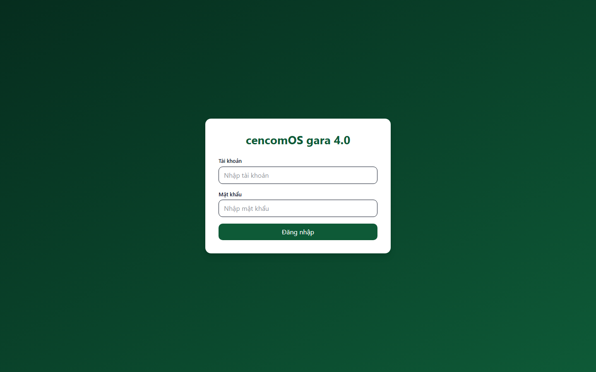
Sau đăng nhập, bạn vào Trang chủ. Đây là "bảng tóm tắt" cho thấy: những việc chờ bạn xử lý, thông báo chưa đọc, đề nghị mua chờ duyệt, phiếu chờ nghiệm thu, vật tư sắp hết tồn.
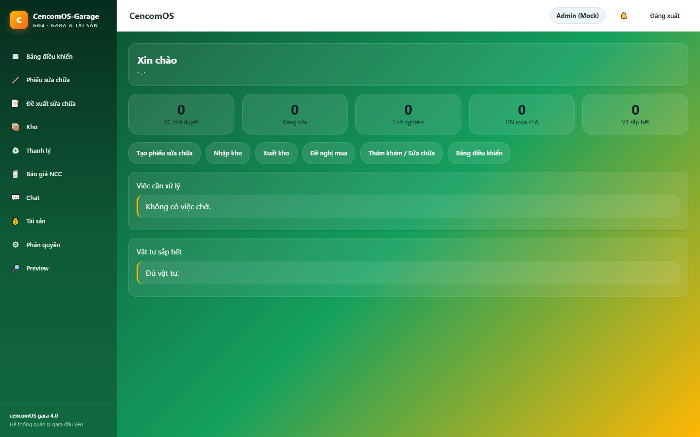
Mẹo: Mỗi sáng, hãy vào Trang chủ trước để biết hôm nay có gì cần duyệt/đối soát.
Khi xưởng cần mua vật tư, kế toán có thể tạo đề nghị mua hoặc duyệt đề nghị do người khác tạo.
Xem danh sách: Vào mục Đề xuất / Đề nghị mua → xem các phiếu, trạng thái (chờ duyệt / đã duyệt / từ chối).
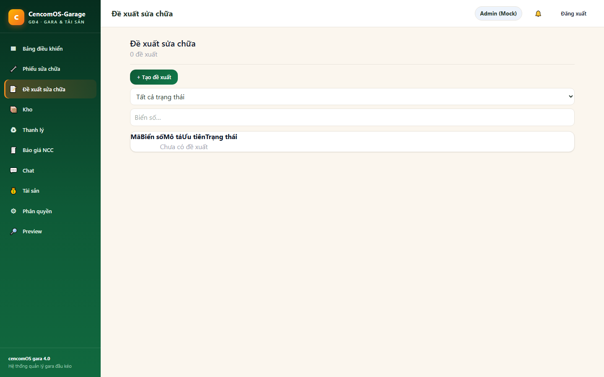
Tạo mới: Bấm nút tạo (+) → chọn xe, nhập vật tư/dịch vụ cần mua, số lượng, đơn giá → Lưu.
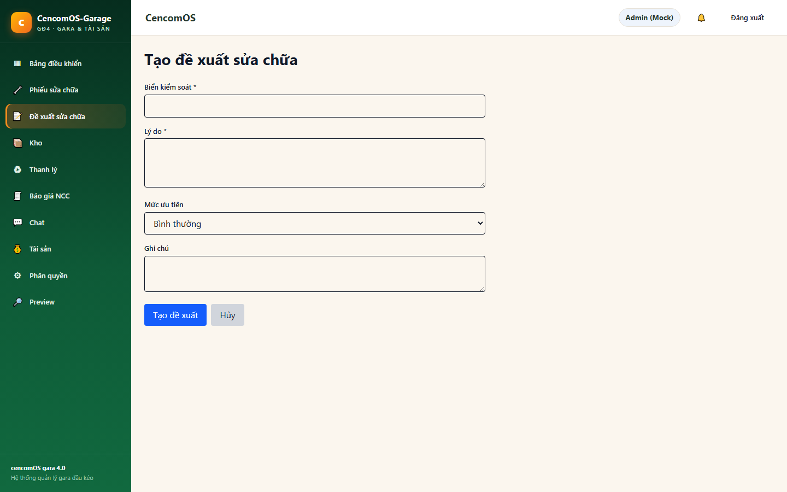
Xem chi tiết & duyệt: Bấm vào một phiếu → xem chi tiết → bấm Duyệt (nếu trong thẩm quyền) hoặc Từ chối (có ghi lý do).
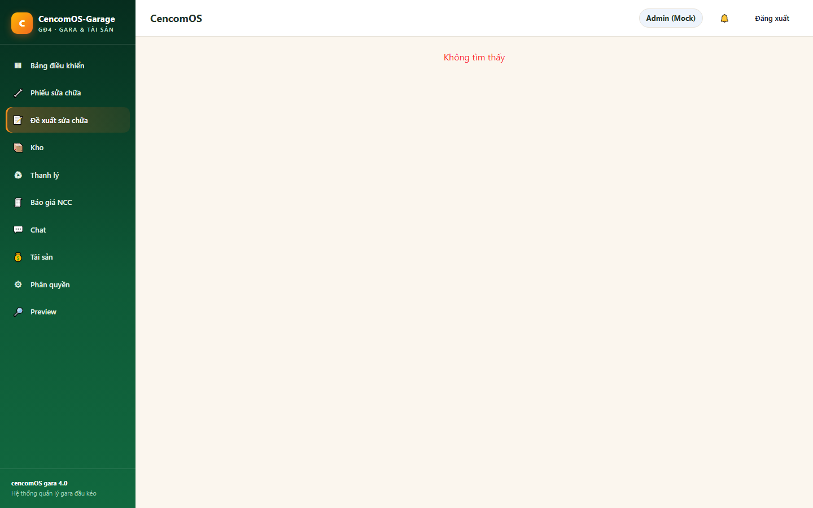
Báo giá nhà cung cấp: Khi có báo giá, vào mục Báo giá NCC để lưu (nhập tay các hạng mục).
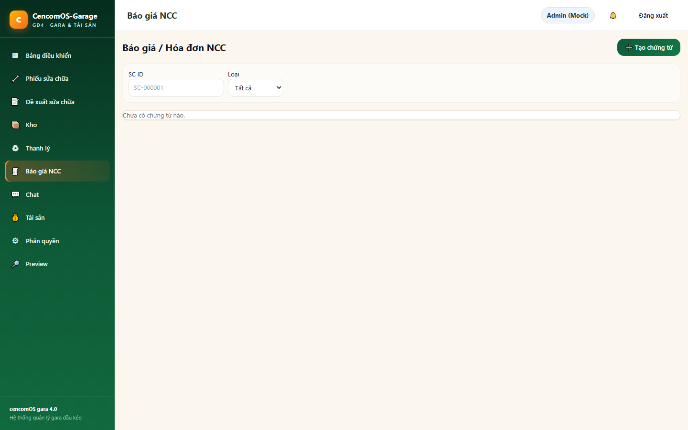
Kế toán chỉ được xem kho (không tự nhập/xuất). Mục đích là theo dõi và đối soát.
Vào mục Kho, có 4 tab:
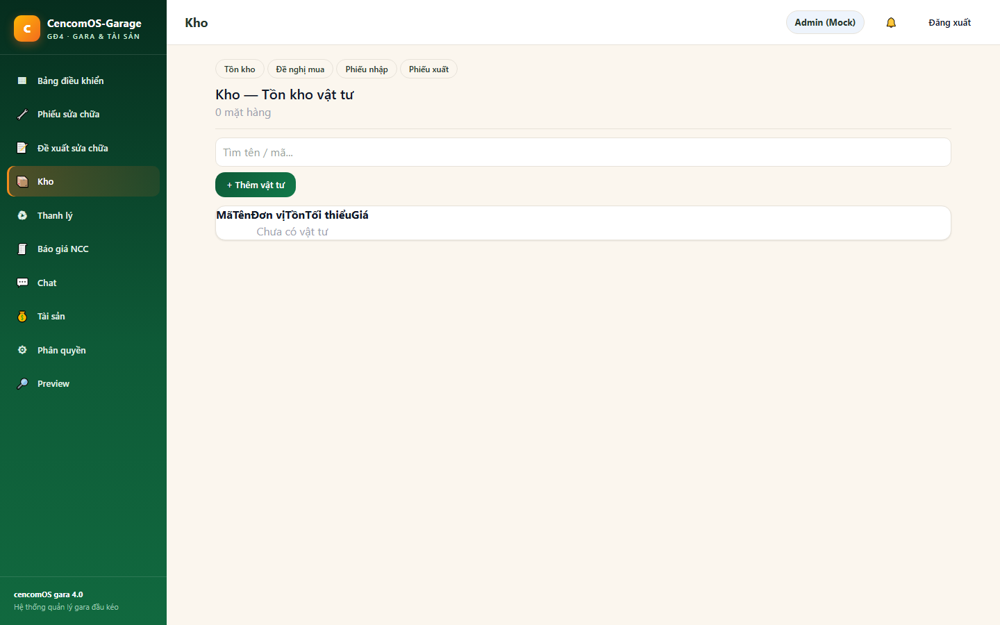
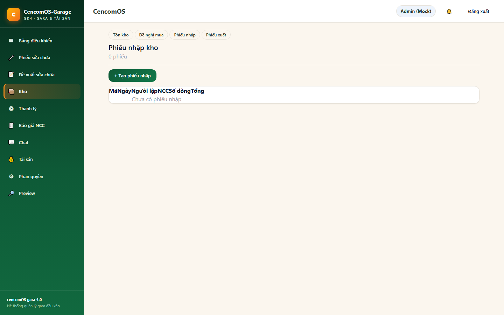
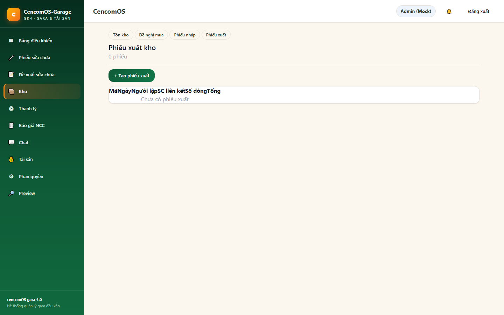
Kế toán xem các phiếu sửa chữa để nắm chi phí, không tạo/sửa (việc này do tiếp nhận/thợ).
Vào mục Phiếu sửa chữa → xem danh sách, trạng thái, tổng tiền, thợ chính, hạn trả xe.
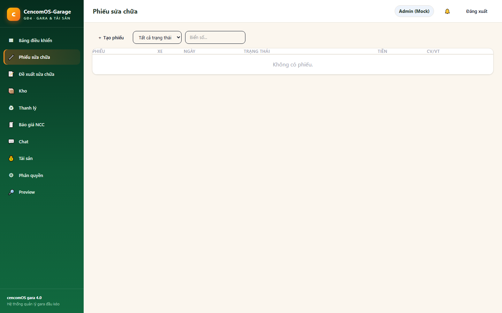
Tạo phiếu (tham khảo): Nếu được giao quyền, form tạo gồm: chọn xe, thêm công việc (nguyên nhân, loại xử lý), thêm vật tư, hẹn trả xe.
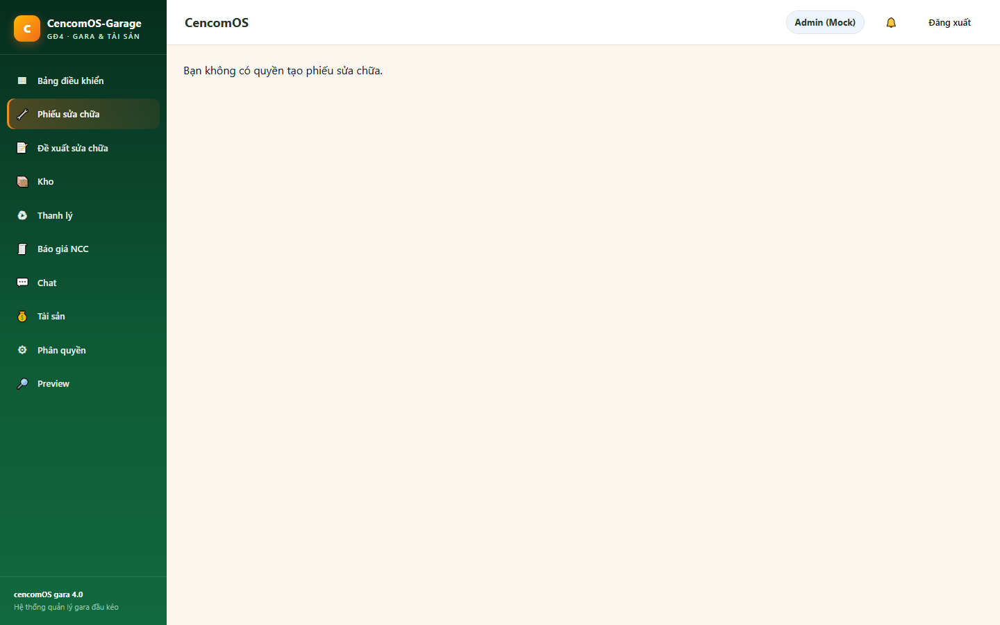
Chi tiết phiếu: Bấm vào phiếu → xem 8 bước hồ sơ, công việc, vật tư, lịch sử. Đây là nơi kế toán theo dõi tiến độ và chi phí.
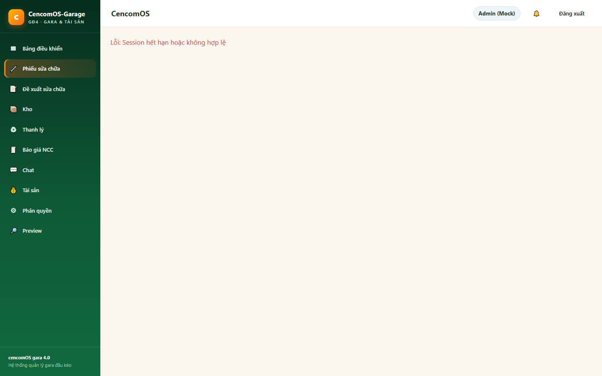
Vào mục Tài sản để xem báo cáo xe, lịch sử sửa chữa, và thực hiện quyết toán (chốt chi phí của một phiếu sửa chữa).
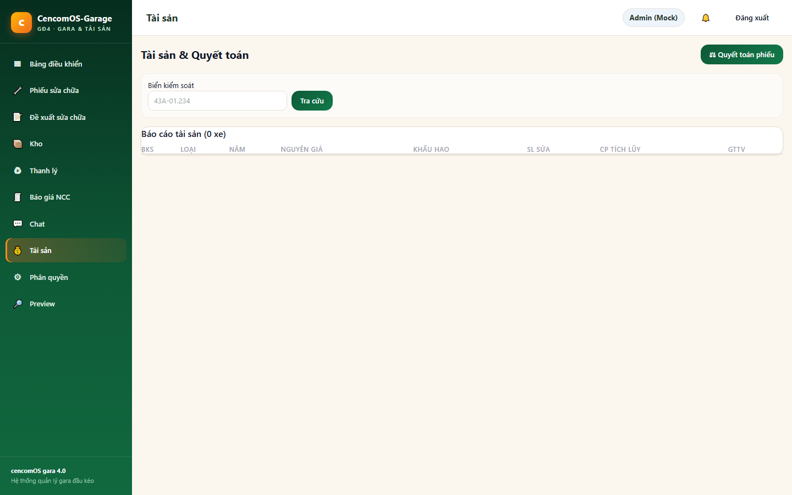
Quyết toán: Chọn phiếu đã hoàn thành đủ 8 bước → bấm Quyết toán. Hệ thống chốt tổng chi phí (vật tư + nhân công), đây là bước sinh bút toán Nợ 642 / Có 154. Một phiếu chỉ quyết toán một lần.
Bộ hồ sơ 8 bước là "hành trình" của một phiếu sửa chữa. Kế toán không làm tất cả 8 bước, nhưng cần hiểu để đối soát:
| Bước | Ai làm chính | Kế toán làm gì |
|---|---|---|
| 1. Tiếp nhận xe | Tiếp nhận | Xem thông tin |
| 2. Kiểm tra & chẩn đoán (Kiểm tu) | Thợ/Xưởng | Xem ước tính chi phí |
| 3. Báo giá nội bộ | Thợ/Xưởng | Xem |
| 4. Lập lệnh sửa chữa | Xưởng | Xem |
| 5a. Nhập vật tư (NCC + HĐ) | Thủ kho/Mua | Tạo/duyệt mua, lưu HĐ đầu vào |
| 5b. Xuất vật tư cho SC | Thủ kho | Xem phiếu xuất, đối soát |
| 5c. Nhân công | Xưởng | Xem chi phí nhân công |
| 6. Nghiệm thu (QC) | Quản lý | Xem biên bản |
| 7. Quyết toán SC | Kế toán/Xưởng | Thực hiện quyết toán (Bước 5 ở trên) |
| 8. Giao xe | Tiếp nhận | Xem đóng phiếu |
Trên màn hình chi tiết phiếu (Hình 13), 8 bước được hiển thị như một dòng thời gian — bạn dễ dàng thấy phiếu đang ở bước nào.
"Kiểm tu" gồm hai khâu kế toán cần theo dõi:
Vào mục Báo cáo (nếu có trong quyền) để xem các báo cáo chi phí, công nợ, tồn kho. Một số báo cáo cho phép xuất ra Excel để lưu trữ hoặc gửi cơ quan thuế.
Dùng mục Chat để trao đổi và giao việc với kho, xưởng, quản lý. Tin nhắn cập nhật realtime; ảnh gửi trong chat sẽ được tải về máy người nhận (không lưu vĩnh viễn).
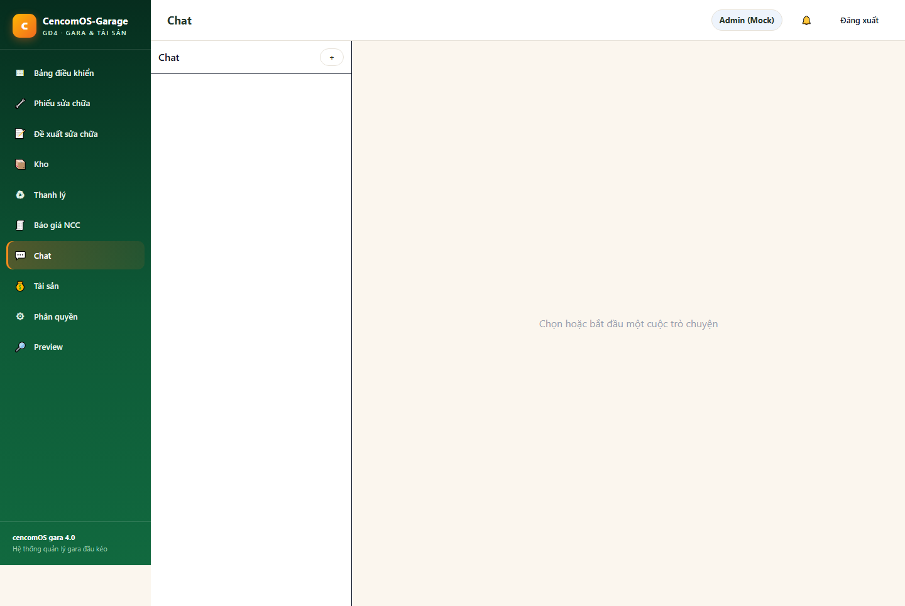
| Màn hình / Việc | Được làm |
|---|---|
| Đề xuất / Đề nghị mua | Xem, Tạo, Duyệt (trong ngưỡng) |
| Mua & Công nợ NCC | Xem, Tạo, Duyệt |
| Tài sản | Xem, Quyết toán |
| Phiếu sửa chữa (SC) | Chỉ xem |
| Kho | Chỉ xem (tồn, nhập, xuất, đề mua) |
| Xe, Báo cáo | Xem |
| Chat | Xem, Tạo, Sửa |
| Thăm khám (TK) | Chỉ xem |
| Bảng điều khiển xưởng / Phân quyền | Không (dành Giám đốc/Quản trị viên) |
| Từ trên phần mềm | Hiểu đơn giản là |
|---|---|
| Phiếu SC | Phiếu sửa chữa của một xe |
| Đề nghị mua / Đề xuất | Giấy yêu cầu mua vật tư |
| Nhà cung cấp (NCC) | Người bán vật tư / dịch vụ cho gara |
| Phiếu nhập / xuất | Giấy ghi vật tư về kho / lấy ra dùng |
| Quyết toán | Chốt tổng chi phí của một phiếu sửa chữa |
| Nghiệm thu | Kiểm tra chất lượng sau sửa, lập biên bản |
| HĐĐT đầu vào | Hóa đơn điện tử mua hàng về (để khấu trừ thuế) |
| Đối soát | So sánh số trên phần mềm với chứng từ thực tế để xem có khớp không |
| Bút toán | Dòng ghi nhận tiền vào/ra một tài khoản kế toán |
1. Còn thiếu gì? Module kế toán VAS đầy đủ (sổ cái kép, báo cáo Cân đối kế toán, công nợ phải trả NCC chi tiết, hóa đơn điện tử đầu vào, kiểm thử đối chiếu "giữ nguyên 100% logic cũ") đang trong lộ trình bổ sung (kế hoạch phiên bản 4.2). Hiện kế toán dùng các màn hình Mua / Kho (xem) / Tài sản / SC (xem) / Báo cáo. Ảnh minh hoạ là ảnh thật chụp ngày 15/08/2026 từ phiên bản đang chạy.
2. Rủi ro ở đâu? (a) Kế toán dễ vô tình sửa dữ liệu sản xuất nếu được cấp quyền rộng — nên giới hạn "chỉ xem" với SC/Kho. (b) Đối soát 152↔tồn kho phải khớp; nếu lệch cần báo ngay. (c) Bảo mật bề mặt: chưa giới hạn đăng nhập sai, CSRF chưa dùng token, cookie chưa Secure trên localhost — cần HTTPS khi dùng thực tế. (d) Giao diện: menu dẹt dễ nhầm, bảng chưa lọc/sắp xếp chuẩn, màn hình tối mỏi mắt.
3. Đã chạy kiểm thử chưa? Theo đánh giá chất lượng hệ thống (16/08/2026): kiểm thử đơn vị 237/237, hợp đồng 78/78, E2E 11/11, tải k6 103/103 — đều đạt. Tuy nhiên kiểm thử đối chiếu nghiệp vụ (conformance parity từ bản cũ) chưa hoàn thành, nên một số luồng kế toán mới cần tự bạn xác nhận thực tế khi dùng.
4. Đề xuất tiếp theo? (i) Hoàn thiện sổ cái VAS + CĐKT + công nợ NCC + HĐĐT đầu vào (v4.2). (ii) Chuẩn hoá bảng dạng Excel (lọc/sắp xếp), chuyển Kho/Kế toán sang nền sáng. (iii) Thêm giới hạn đăng nhập sai & CSRF token thực. (iv) Tạo "workspace Kế toán" riêng để menu gọn, tránh thao tác nhầm. (v) Bổ sung trạng thái trống/đang tải rõ ràng.
Tài liệu này được soạn từ rà soát thực tế mã nguồn, tài liệu kiến trúc, báo cáo đánh giá chất lượng và ảnh chụp phiên bản đang vận hành. Vui lòng cập nhật khi phiên bản 4.2 hoàn thiện để hướng dẫn sát thực tế hơn.